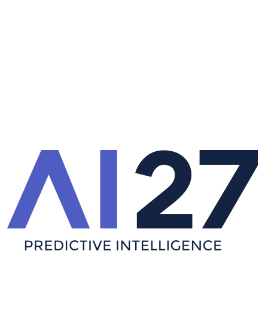
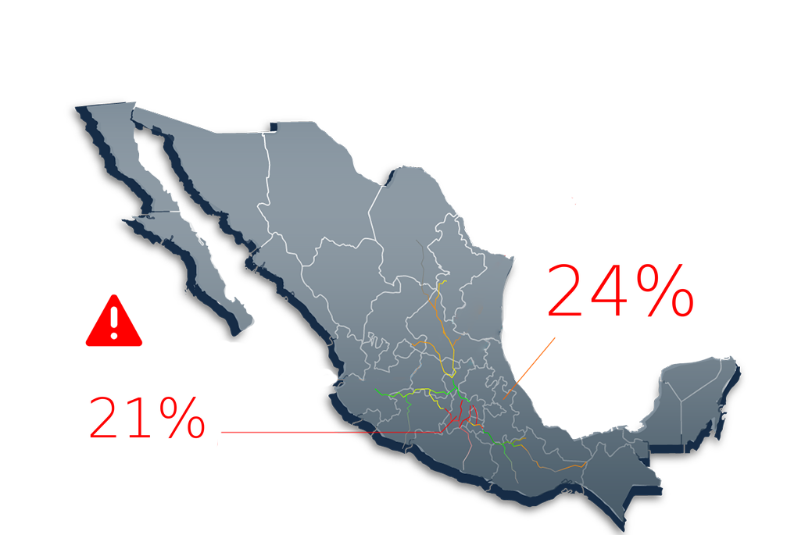
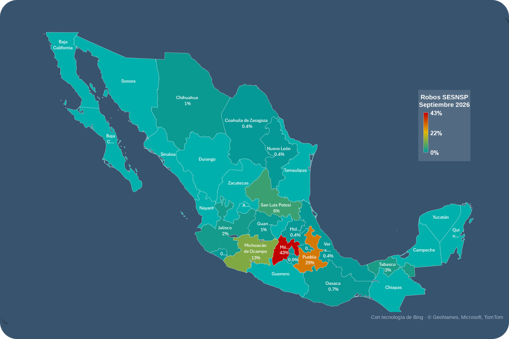
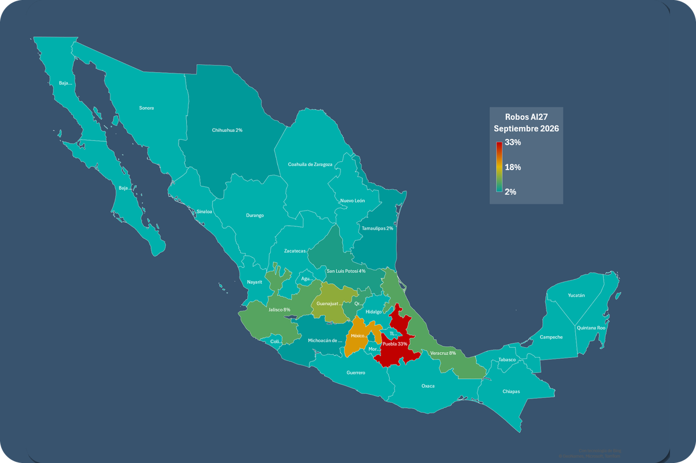

Información actualizada Octubre 2026
Somos una empresa con más de 25 años de experiencia, especializada en brindar soluciones de seguridad logística al transporte de carga.
Contamos con un Grupo de Monitoreo Privado y un Grupo de Reacción propio que nos permiten generar una acción inmediata ante eventos inesperados en coordinación con las autoridades.
Nuestra experiencia nos ha permitido crear una amplia infraestructura de seguridad, implementando corredores y estableciendo puntos de control y verificación a lo largo del país, en coordinación con las autoridades federales, estatales y municipales.
El rango horario con mayor porcentaje de intentos de robo durante octubre fue de 05:01–11:00 hrs, concentrando el 31% del total de eventos registrados.
Abarrotes fue la categoría con mayor porcentaje de intentos de robo durante octubre, concentrando el 55% del total de incidentes, seguida de Unidades de transporte con el 28%.
Los estados con mayor número de intentos de robo durante octubre fueron Puebla, con el 24% del total de incidentes, seguido de Estado de México, con el 21%.
Durante el mes analizado, los vehículos particulares registraron 335 intentos de robo por cada 10,000 unidades, mostrando una disminución del 49% respecto a septiembre. En contraste, las categorías Thorton y Tráiler presentaron un incremento en sus indicadores de incidencia, al pasar de 5 a 16 y de 4 a 8 intentos por cada 10,000 unidades, respectivamente, lo que representa aumentos del 220% y 100%.
Por su parte, las camionetas y/o vehículos de hasta 5 toneladas también mostraron un incremento, pasando de 1 a 8 intentos por cada 10,000 unidades. Asimismo, la categoría Rabón registró 28 intentos por cada 10,000 unidades, mientras que Caja de 53 pies reportó un indicador de 6,667, posicionándose como la categoría con mayor incidencia reportada durante octubre. En términos generales, se observa un incremento en la exposición de distintas categorías de transporte de carga, en contraste con la reducción registrada en los vehículos particulares.
El horario es una de las variables que puede tener mayor impacto en la probabilidad de intentos de robo para un embarque. El rango de horarios con más intentos de robo en octubre es de las 05:01–11:00, con una incidencia del 31%.
Por su parte, los rangos 17:01–23:00 y 23:01–05:00 presentaron una participación del 24% cada uno, acumulando en conjunto el 48% de los intentos de robo del periodo.
Horarios con mayor concentración de robos por categoría (cada 100 robos)
Nota: Los horarios resaltados indican los periodos del día con mayor concentración de robos por cada 100 robos registrados.



De acuerdo con el SESNSP, Estado de México y Puebla se mantienen como los principales focos de robo al autotransporte a nivel nacional durante septiembre de 2026, concentrando el 43% y 29% de los casos reportados, respectivamente, sobre un total de 414 incidencias registradas. Les sigue Michoacán con 13%, mientras que San Luis Potosí representa el 6% y Tabasco el 3%, manteniéndose estas entidades entre las zonas de mayor incidencia del periodo. En comparación con agosto (392 robos), septiembre registra un incremento del 5.6% en el total de casos, al pasar de 392 a 414 incidencias, manteniendo la tendencia al alza observada durante el mes anterior. Si bien Estado de México disminuyó su participación del 50% al 43%, Puebla incrementó su concentración del 24% al 29%, evidenciando una redistribución territorial de los eventos, con una persistente concentración del riesgo en ambas entidades, que en conjunto representan el 72% de las incidencias nacionales.
En los registros de AI27 para septiembre de 2026, la distribución del riesgo muestra una mayor concentración en los corredores logísticos del centro y Bajío del país. Puebla encabeza con 33%, seguido de Estado de México con 20%, mientras que Guanajuato concentra el 12% de los eventos. Por su parte, Jalisco y Veracruz representan el 8% cada uno, seguidos de Querétaro con 6% y San Luis Potosí con 4%. En comparación con agosto, destaca el incremento en la participación de Puebla, que pasó del 13% al 33%, posicionándose como la entidad de mayor incidencia dentro de los registros internos, mientras que Estado de México presentó una ligera disminución del 21% al 20%. Asimismo, Guanajuato incrementó su participación del 7% al 12%, mientras que Jalisco disminuyó del 15% al 8%. La distribución registrada durante el periodo refleja una mayor concentración de eventos en Puebla, Estado de México y Guanajuato, que en conjunto acumulan el 65% de la incidencia interna, evidenciando una exposición relevante en los principales corredores logísticos del centro y Bajío del país.
Para mejorar la seguridad en el transporte de carga es recomendable:
Uso de tecnología predictiva: emplear sistemas avanzados que analicen información en tiempo real para anticipar posibles amenazas, proporcionando alertas tempranas y permitiendo a las empresas tomar decisiones preventivas sobre las rutas a seguir.
Capacitación de operadores: entrenar a los choferes en técnicas de conducción defensiva, reconocer señales de peligro y saber cómo actuar ante situaciones de riesgo, para proteger tanto la carga como su bienestar.
Monitoreo y respuesta inmediata: utilizar sistemas de monitoreo constante para tener visibilidad sobre el estado de las unidades, lo que permite una respuesta rápida ante cualquier incidente y coordinación con las fuerzas de seguridad.
Integración de herramientas digitales de seguridad: incorporar soluciones que ofrezcan una capa adicional de seguridad en el proceso de transporte, con sistemas de seguimiento y monitoreo avanzado para una gestión eficiente de los riesgos.
Inversión en infraestructura de seguridad: invertir en tecnología avanzada, como cámaras de vigilancia, sensores de carga y sistemas de GPS, para fortalecer la infraestructura de seguridad de las unidades de transporte y minimizar el impacto de cualquier intento de robo.